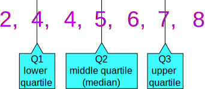
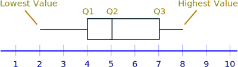
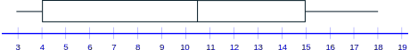

Quartiles
Quartiles are the values that divide a list of numbers into quarters:
- Put the list of numbers in order
- Then cut the list into four equal parts
- The Quartiles are at the "cuts"
Like this:
Example: 5, 7, 4, 4, 6, 2, 8
Put them in order: 2, 4, 4, 5, 6, 7, 8
Cut the list into quarters:

And the result is:
- Quartile 1 (Q1) = 4
- Quartile 2 (Q2), which is also the Median, = 5
- Quartile 3 (Q3) = 7
Sometimes a "cut" is between two numbers ... the Quartile is the average of the two numbers.
Example: 1, 3, 3, 4, 5, 6, 6, 7, 8, 8
The numbers are already in order
Cut the list into quarters:

In this case Quartile 2 is half way between 5 and 6:
Q2 = (5+6)/2 = 5.5
And the result is:
- Quartile 1 (Q1) = 3
- Quartile 2 (Q2) = 5.5
- Quartile 3 (Q3) = 7
Interquartile Range
The "Interquartile Range" is from Q1 to Q3:
To calculate it just subtract Quartile 1 from Quartile 3, like this:
Example:
The Interquartile Range is:
Q3 − Q1 = 7 − 4 = 3
Box and Whisker Plot
We can show all the important values in a "Box and Whisker Plot", like this:

A final example covering everything:
Example: Box and Whisker Plot and Interquartile Range for
4, 17, 7, 14, 18, 12, 3, 16, 10, 4, 4, 11
Put them in order:
3, 4, 4, 4, 7, 10, 11, 12, 14, 16, 17, 18
Cut it into quarters:
3, 4, 4 | 4, 7, 10 | 11, 12, 14 | 16, 17, 18
In this case all the quartiles are between numbers:
- Quartile 1 (Q1) = (4+4)/2 = 4
- Quartile 2 (Q2) = (10+11)/2 = 10.5
- Quartile 3 (Q3) = (14+16)/2 = 15
Also:
- The Lowest Value is 3,
- The Highest Value is 18
So now we have enough data for the Box and Whisker Plot:

And the Interquartile Range is:
Q3 − Q1 = 15 − 4 = 11